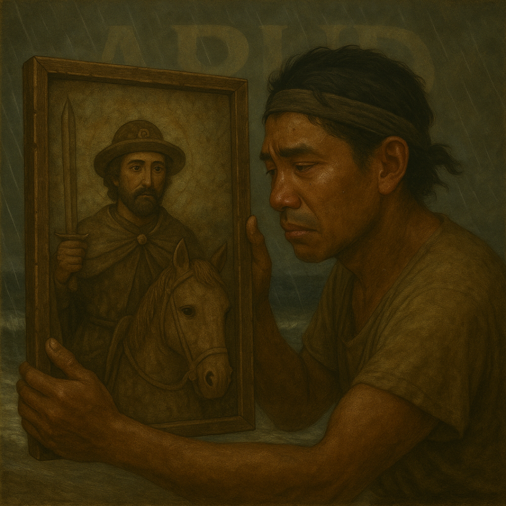

Welcome to AnceStory, Where Ancestral Whispers Become Timeless Tales


This platform draws inspiration from a 2021 senior high school research project conducted at Rawis High School of Rawis, Libon, Albay under the Practical Research subject. Titled "Local Folk Stories of Baranggay Rawis and Apud, Libon, Albay: An Ethnological Research" the project documented the vibrant cultural heritage of these communities through their oral traditions, myths, and legends. As one of the student researchers, I Joven Bataller, alongside my peers, sought to safeguard these stories from being lost to time. Building on that foundation, this website reimagines the initiative as an inclusive, global platform. While rooted in the traditions of Apud and Rawis, it now welcomes contributions from individuals worldwide, inviting everyone to share their own local folklore, family tales, or cultural narratives. Join us in preserving humanity’s collective heritage. Whether your story spans generations or reflects a unique personal experience, your voice matters. Share yours today and help weave a richer tapestry of global culture.
 Download Research PDF
Download Research PDF
Storytelling has long been an integral part of human communication, serving as a medium for passing down knowledge, traditions, and values across generations. In rural communities, storytelling—particularly through folk stories—has played a significant role in preserving local culture and heritage. In Barangay Apud and Rawis, Libon, Albay, folk stories have been passed down orally by the elderlies, representing the unique culture, practices, and historical narratives of the local people. These stories cover various themes, including the origin of the barangay's name, patron saints, and mysterious tales about the environment and daily life in the community. However, the rise of modernization and technology has led to the neglect of these local folk stories. The younger generation, more attuned to modern media, has distanced itself from the oral tradition of storytelling. As a result, the practice has declined, and some valuable cultural legacies are at risk of being lost. Despite this, the folk stories of Barangay Apud and Rawis remain a vital part of their cultural identity, serving as a window into the past and helping to preserve local customs, beliefs, and values that have shaped the community over time. The primary goal of this study is to explore and document the folk stories of Barangay Apud and Rawis, examining their significance within the community and identifying the potential plots that can be derived from them. Through ethnographical research, this study aims to rekindle interest in these traditional stories, particularly among the youth, and underscore their importance as cultural heritage. Insights will be gathered from key informants, aged 20-85, who possess extensive knowledge of these folk stories, to help illuminate the rich storytelling tradition that has long been a part of